本文为翻译文章，点击查看原文。
速率限制是缓解级联故障和防止耗尽共享资源的一种简单有效的方法。Envoy 是一个功能丰富的代理，可以为任何服务轻松添加速率限制的功能。本文将介绍在不更改应用程序本身配置的前提下如何配置 Envoy 来强制对应用进行速率限制。
问题
你是否遇到过资源被大量的请求淹没或耗尽的情况？你的客户端是否具有回退重试或速率限制的逻辑？在微服务架构中，不对其使用量进行限制的资源很容易被客户端发出的大量请求所淹没。当然可能存在一定数量的客户端，这些客户端本身就已经实现了各种重试/回退和速率限制的策略。不对访问量进行限制的客户端会耗尽服务端的资源，从而使其他客户端无法访问服务，甚至有些客户端会一直发起请求，直到使服务完全不可用。
对 API 的使用进行约束的常用方法是启用速率限制。与基于 IP 的速率限制或者 web 框架提供的应用级别速率限制不同，Envoy 允许在 HTTP 层实现快速，高性能和可靠的全局速率限制。
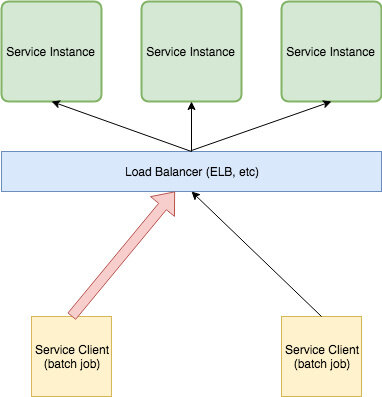
上图中左侧的 Service Client 代表使用率特别高的客户端。在运行期间，它可以使负载均衡后端的所有服务实例流量饱和，并使其他更高优先级的客户端丢弃其请求。
Envoy 能够对网络级别的任何服务进行速率限制，而无需对应用程序进行任何修改。此外，由于 Envoy 工作在 7 层，也就是应用程序级别，所以它可以检查 HTTP 速率信息并对其进行速率限制。
在本教程中，vegata 负载测试工具用于模拟上述示例中的批处理作业。下图显示了请求速率大约为 500次/秒 的稳定状态。
译者注：首先克隆 grokking-go 项目，然后进入
bolt-on-out-of-process-rate-limits目录
$ make load-test
echo "GET http://localhost:8080/slow" | vegeta attack -rate=500 -duration=0 | tee results.bin | vegeta report
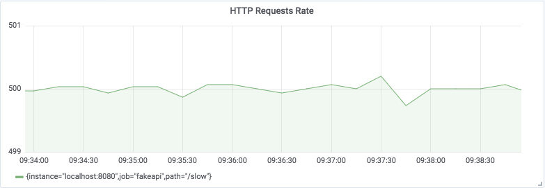
在模拟后台作业期间，对 API 资源 /slow 的访问速率达到了每秒 3500 个请求，影响到了其他端点和客户端。
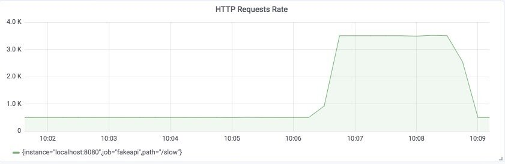
为了解决这个问题，下面的解决方案将使用 Envoy 强制限制请求速率为 500个请求/秒。但首先…
Envoy 是什么？
Envoy 是一个轻量级代理服务器，能够处理任何 TCP/IP/HTTP/GRPC/HTTP2 等协议的连接。它具有高度可配置性，并支持许多不同的插件。它还使可观察性成为一等公民。
在 Envoy 横空出世之前，应用程序级别的重试、延迟注入、速率限制和熔断都要通过应用程序本身的代码逻辑来实现。Envoy 将这些功能从应用程序中剥离出来，并让运维管理人员能够配置和启用这些功能，无需对应用程序本身作任何修改。
Envoy 的 官方文档 和 Matt Klein 的文章提供了一个比我更好的对 Envoy 的介绍：
Envoy 是一款由
Lyft开源的，使用 C++ 编写的高性能分布式代理，专为单体服务和应用而设计。它也被作为大型微服务框架 Istio service mesh 的通信总线和通用数据平面。通过借鉴 NGINX、HAProxy、硬件负载均衡器和云负载均衡器等解决方案，Envoy 作为一个独立的进程与应用程序一起运行，并通过与平台无关的方式提供一些高级特性，从而形成一个对应用透明的通信网格。当基础设施中的所有服务流量通过 Envoy 网格流动时，通过一致的可观察性，调整整体性能和添加更多底层特性，一旦发生网络和应用程序故障，能够很容易定位出问题的根源。
解决方案
所有代码和示例都可以在 GitHub 上找到。
下面给出具体的解决方案：
- 将 Envoy 配置为 API 负载均衡器的前端代理；仍然允许所有流量通过。
- 配置并运行全局速率限制服务。
- 配置 Envoy 使用全局速率限制服务。
我们需要一种方法来限制同一时间发出的请求数量，以便将 API 负载均衡器与请求达到高峰的客户端隔离，并确保其他客户端在执行这些批处理作业（通过 vegeta 来模拟）期间可以继续访问 API。为了达到这个目的，我们将 Envoy 代理和批处理客户端 vegeta 部署在同一台机器上。
通过将 Envoy 作为 Sidecar 与批处理客户端一起运行，在请求达到负载均衡之前就可以对请求进行速率限制。使用 Envoy 是一个很明智的选择，因为它具有高度可配置性，高性能，并且可以很好地处理 HTTP 请求之间的平衡。
将 Envoy 配置为 API 负载均衡器的前端代理
第一步是将 Envoy 配置为处于批处理作业客户端和 API 负载均衡器之间，客户端向 API 发起的所有请求都会首先经过 Envoy 的处理。首先需要让 Envoy 知道如何连接 API，然后再更新批处理作业的配置，使该客户端向 Envoy 发出请起，而不是直接向 API 发出请求。配置完之后的最终状态如下图所示：
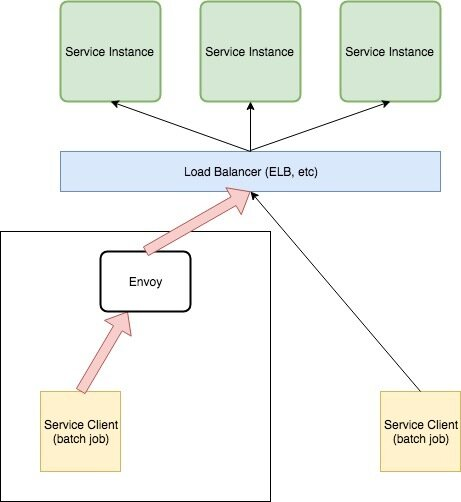
此步骤仅通过 Envoy 来对 API 流量进行路由，尚未对应用进行速率限制。为了达到限速的目的，我们还需要做一些额外的配置：
cluster
Cluster 表示 Envoy 连接到的一组逻辑上相似的上游主机（在本示例中表示 API 负载均衡器）。Cluster 的配置非常简单：
clusters:
- name: api
connect_timeout: 1s
type: strict_dns
lb_policy: round_robin
hosts:
- socket_address:
address: localhost
port_value: 8080
在本示例中，我们运行了一个监听在 localhost:8080 上的 fakapi 来模拟上图中的负载均衡器。通过 Envoy 向 API 发出的任何请求都会被发送到 localhost:8080。
virtual_host
virtual_host 部分的配置用来确保所有请求都会路由到上面定义的 API 集群。
- name: api
domains:
- "*"
routes:
- match:
prefix: "/"
route:
cluster: api
其余的配置文件用来确定 Envoy 本身监听在哪个地址以及 Envoy 与其他服务之间的连接规则。
static_resources:
listeners:
- name: listener_0
address:
socket_address: { address: 0.0.0.0, port_value: 10000}
filter_chains:
- filters:
- name: envoy.http_connection_manager
config:
stat_prefix: ingress_http
codec_type: AUTO
route_config:
name: remote_api
virtual_hosts:
- name: api
domains:
- "*"
routes:
- match:
prefix: "/"
route:
cluster: api
http_filters:
- name: envoy.router
clusters:
- name: api
connect_timeout: 1s
type: strict_dns
lb_policy: round_robin
hosts:
- socket_address:
address: localhost
port_value: 8080
admin:
access_log_path: "/dev/null"
address:
socket_address:
address: 0.0.0.0
port_value: 9901
更新负载测试工具的参数，直接访问本地的 Envoy 代理，通过仪表板可以观察到 Envoy 正在接收流量。下图的 Envoy 仪表板来自 Grafana 官方仪表板仓库（Lyft 也提供了一份 Envoy 仪表板）。
$ make load-test LOAD_TEST_TARGET=http://localhost:10000 LOAD_TEST_RATE=500
echo "GET http://localhost:10000/slow" | vegeta attack -rate=500 -duration=0 | tee results.bin | vegeta report
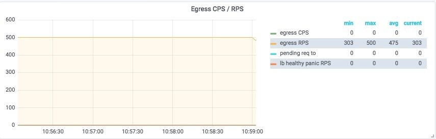
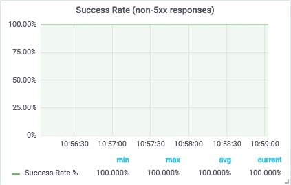
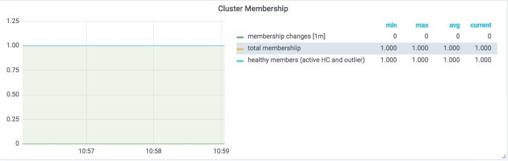
上图显示 Envoy 现在正在接收客户端发送给 API 的所有请求，并将它们发送到上游的负载均衡器！
配置并运行全局速率限制服务
此步骤将配置运行 Lyft 开源的全局 速率限制 服务。运行该服务非常简单，只需要克隆它的代码仓库，修改一部分配置文件，然后通过 docker-compose 启动就行了。
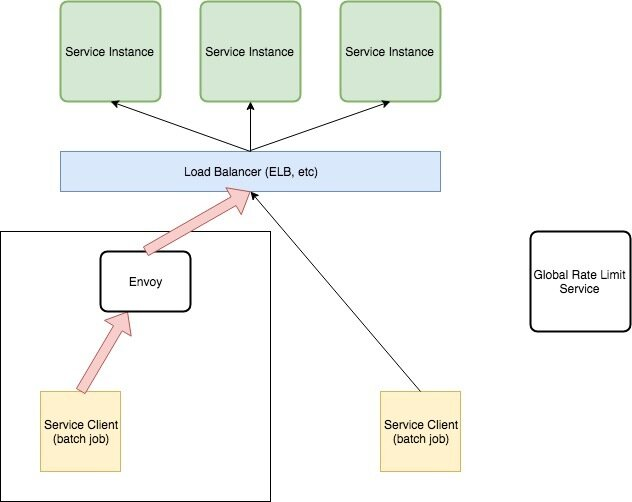
首先克隆 Ratelimit 代码仓库并修改配置文件，更新 domain 字段以及 descriptor 字段的 key 和 value：
$ cat examples/ratelimit/config/config.yaml
---
domain: apis
descriptors:
- key: generic_key
value: default
rate_limit:
unit: second
requests_per_unit: 500
接下来使用docker-compose 的配置文件（docker-compose.yml）来启动全局速率限制服务（详细步骤请参考 README）：
$ docker-compose down && docker-compose up
配置 Envoy 使用全局速率限制服务
最后一步是配置 Envoy 使用全局速率限制服务，以强制执行速率限制并降低对 API 的请求速率。配置生效后，Envoy 将会检查每个传入连接的速率限制，并根据上面的配置过滤掉一部分请求（限制最多 500 个请求/秒）。
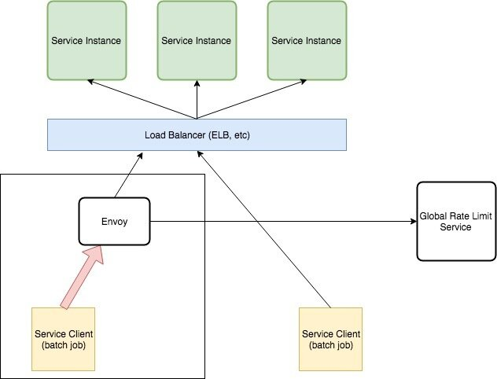
开启了速率限制的 Envoy 配置文件如下所示：
static_resources:
listeners:
- name: listener_0
address:
socket_address: { address: 0.0.0.0, port_value: 10000}
filter_chains:
- filters:
- name: envoy.http_connection_manager
config:
use_remote_address: true
stat_prefix: ingress_http
codec_type: AUTO
route_config:
name: remote_api
virtual_hosts:
- name: api
domains:
- "*"
routes:
- match:
prefix: "/"
route:
cluster: api
rate_limits:
- stage: 0
actions:
- {generic_key: {descriptor_value: "default"}}
http_filters:
- name: envoy.rate_limit
config:
domain: apis
stage: 0
- name: envoy.router
clusters:
- name: api
connect_timeout: 1s
type: strict_dns
lb_policy: round_robin
hosts:
- socket_address:
address: localhost
port_value: 8080
- name: rate_limit_cluster
type: strict_dns
connect_timeout: 0.25s
lb_policy: round_robin
http2_protocol_options: {}
hosts:
- socket_address:
address: localhost
port_value: 8081
rate_limit_service:
grpc_service:
envoy_grpc:
cluster_name: rate_limit_cluster
timeout: 0.25s
admin:
access_log_path: "/dev/null"
address:
socket_address:
address: 0.0.0.0
port_value: 9901
然后，我们以 1000个请求/秒 的速率（速率限制的2倍）运行负载测试工具：
$ make load-test LOAD_TEST_TARGET=http://localhost:10000 LOAD_TEST_RATE=1000
echo "GET http://localhost:10000/slow" | vegeta attack -rate=1000 -duration=0 | tee results.bin | vegeta report
可以查看一下 ratelimiter 服务的日志，日志中显示了它接收的请求和它进行速率限制检查的过程：
msg="cache key: apis_generic_key_default_1540829538 current: 35"
ratelimit_1 | time="2018-10-29T16:12:18Z" level=debug msg="cache key: apis_generic_key_default_1540829538 current: 34"
ratelimit_1 | time="2018-10-29T16:12:18Z" level=debug msg="cache key: apis_generic_key_default_1540829538 current: 33"
ratelimit_1 | time="2018-10-29T16:12:18Z" level=debug msg="cache key: apis_generic_key_default_1540829538 current: 31"
ratelimit_1 | time="2018-10-29T16:12:18Z" level=debug msg="cache key: apis_generic_key_default_1540829538 current: 32"
ratelimit_1 | time="2018-10-29T16:12:18Z" level=debug msg="cache key: apis_generic_key_default_1540829538 current: 42"
ratelimit_1 | time="2018-10-29T16:12:18Z" level=debug msg="starting get limit lookup"
ratelimit_1 | time="2018-10-29T16:12:18Z" level=debug msg="cache key: apis_generic_key_default_1540829538 current: 46"
ratelimit_1 | time="2018-10-29T16:12:18Z" level=debug msg="looking up key: generic_key_default"
ratelimit_1 | time="2018-10-29T16:12:18Z" level=debug msg="looking up key: generic_key_default"
ratelimit_1 | time="2018-10-29T16:12:18Z" level=debug msg="looking up key: generic_key_default"
ratelimit_1 | time="2018-10-29T16:12:18Z" level=debug msg="looking up key: generic_key_default"
ratelimit_1 | time="2018-10-29T16:12:18Z" level=debug msg="looking up key: generic_key_default"
如果速率限制功能无法生效，可以参考该 issue 中的讨论。
运行一段时间后，停止负载测试打印出测试报告，可以看到其中 1/2 的请求被 Envoy 限制了，被限制的请求的状态码为 429 ！！！
$ make load-test LOAD_TEST_TARGET=http://localhost:10000 LOAD_TEST_RATE=1000
echo "GET http://localhost:10000/slow" | vegeta attack -rate=1000 -duration=0 | tee results.bin | vegeta report
Requests [total, rate] 128093, 1000.02
Duration [total, attack, wait] 2m8.102168403s, 2m8.090470728s, 11.697675ms
Latencies [mean, 50, 95, 99, max] 10.294365ms, 11.553135ms, 33.428287ms, 52.678127ms, 177.709494ms
Bytes In [total, mean] 1207354, 9.43
Bytes Out [total, mean] 0, 0.00
Success [ratio] 52.69%
Status Codes [code:count] 200:67494 429:60599
Error Set:
429 Too Many Requests
通过 Envoy 暴露的速率限制指标（envoy_cluster_ratelimit_over_limit）或（4xx 响应）的速率来绘制仪表板，可以看到相应的可视化图表：
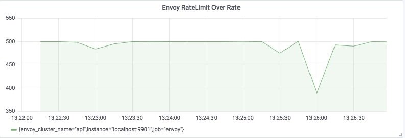
通过可视化 API 服务实际看到的请求数量，可以证明请求速率在 500个请求/秒 上下波动，这正是我们所期望的！
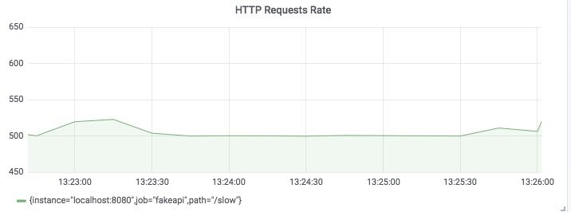
再查看一下 Envoy 传出的 API 连接，可以看到传出请求速率也在 500个请求/秒 上下波动！
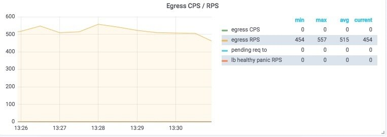
实验成功！
总结
希望通过本文的讲解能让你明白配置 Envoy 以减轻贪婪客户端对 API 资源的消耗是多么简单。我发现这种模式非常有用，因为弹性能力是为应用开发更多功能的基础。在 Envoy 横空出世之前，应用程序级别的重试、延迟注入、速率限制和熔断都要通过应用程序本身的代码逻辑来实现。Envoy 将这些功能从应用程序中剥离出来，并让运维管理人员能够配置和启用这些功能，无需对应用程序本身作任何修改。Envoy 完全颠覆了我们对服务弹性能力的认知，希望你读这篇文章时能和我写这篇文章时一样兴奋！
参考资料
- https://www.datawire.io/envoyproxy/getting-started-lyft-envoy-microservices-resilience/
- https://www.envoyproxy.io/docs/envoy/latest/
- https://blog.turbinelabs.io/deploying-envoy-as-a-front-proxy-5b7e0a453f65
- http://blog.christianposta.com/microservices/00-microservices-patterns-with-envoy-proxy-series/
- https://blog.envoyproxy.io/introduction-to-modern-network-load-balancing-and-proxying-a57f6ff80236
- https://eng.lyft.com/announcing-ratelimit-c2e8f3182555
- https://github.com/dm03514/grokking-go/compare/blog/bolt-on-rate-limits?expand=1